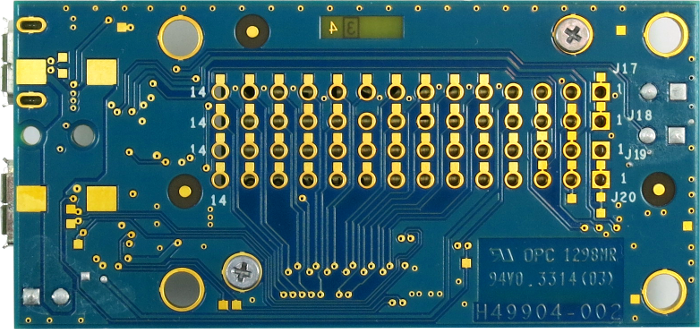

<link href="./index/edison.css" rel="stylesheet" type="text/css">
<script src="./index/edison.js" type="text/javascript"></script>
<script src="./index/angular.min.js"></script>


<section style="margin-top:20px;" ng-app="pinApp">
  <div class="container">
    <h1 class="page-header" style="text-align:center">Intel Edison</h1>
    <p class="lead">Here are some resources I've put together for the Intel Edison. There is a lot of great info in the Intel Forums but sometimes it's hard to dig through. What else would you like to see here? Let me know in the comments.</p>
  </div>
  <div class="container" ng-controller="EdisonPins">
    <h3>Mini-Breakout Pin Locator</h3>
    <p>Ever wonder what all of those pins are on the mini breakout board or had trouble finding the pins you need for a project? Hover over a pin to see what it is or use the controls to find groups of pins like SPI or I2C.</p>
    <p><small class="text-muted">(The hover functionality doesn't work correctly in IE but you can still select groups of pins. I recommend Chrome.)</small></p>
    <div class="row" style="margin-top:15px; margin-bottom:15px;">
      <div class="col-lg-8 col-lg-offset-1">
        <div class="btn-toolbar" role="toolbar" aria-label="...">
        <div class="btn-group" role="group" aria-label="">
          <div class="btn-group" role="group">
            <button type="button" class="btn btn-default" ng-click="showPins('gpio')">GPIO</button>
          </div>
          <div class="btn-group" role="group">
            <button type="button" class="btn btn-default" ng-click="showPins('pwm')">PWM</button>
          </div>
          <div class="btn-group" role="group">
            <button type="button" class="btn btn-default" ng-click="showPins('uart1')">UART1</button>
          </div>
          <div class="btn-group" role="group">
            <button type="button" class="btn btn-default" ng-click="showPins('uart2')">UART2</button>
          </div>
          <div class="btn-group" role="group">
            <button type="button" class="btn btn-default" ng-click="showPins('i2c1')">I2C1</button>
          </div>
          <div class="btn-group" role="group">
            <button type="button" class="btn btn-default" ng-click="showPins('i2c6')">I2C6</button>
          </div>
          <div class="btn-group" role="group">
            <button type="button" class="btn btn-default" ng-click="showPins('spi')">SPI</button>
          </div>
          <div class="btn-group" role="group">
            <button type="button" class="btn btn-default" ng-click="showPins('sd')">SD</button>
          </div>
          <div class="btn-group" role="group">
            <button type="button" class="btn btn-default" ng-click="showPins('power')">Power</button>
          </div>
          <div class="btn-group" role="group">
            <button type="button" class="btn btn-default" ng-click="showPins('misc')">Misc</button>
          </div>
          <div class="btn-group" role="group">
            <button type="button" class="btn btn-default" ng-click="showPins('clock')">Clock</button>
          </div>
        </div>
        </div>
      </div>
    </div>
    <div class="row">
      <div class="col-lg-6 col-lg-offset-1" style="position:relative; padding:0px;">
        <div class="area &#123;&#123;pin.tags.join(' ')&#125;&#125;" ng-style="pin.style" ng-repeat="pin in pins" >
          <span class="custom-tooltip tooltip-effect-4"><span class="tooltip-item"></span><span class="tooltip-content clearfix"><span class="tooltip-text"><h5>&#123;&#123;pin.name&#125;&#125;</h5><p style="font-size:15px;">&#123;&#123;pin.description&#125;&#125;</p></span></span></span>
        </div>
        
      </div>
      <div id="pin-detail" class="col-lg-3 col-lg-offset-2">
        <p>Use the toolbar above the image to highlight certain pins and see a description here.</p>
      </div>
    </div>
  </div>
</section>


<script type="text/javascript">
  var pinApp = angular.module('pinApp', []);
  pinApp.controller('EdisonPins', ['$scope', function($scope){
    $scope.pins = edison_pins;
    $scope.pinDescriptions = descriptions;
    $scope.clearPins = function(){
      $('.area').css('background-color', 'transparent');
    };

    $scope.showPins = function(category){
      $scope.clearPins();
      $('.' + category).css('background-color', '#ff8719');
      $('#pin-detail').html($scope.pinDescriptions[category]);
    };

  }]);
  </script>